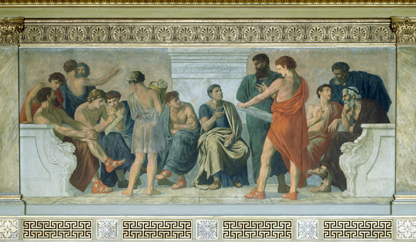

Zašto Peripatetika?

Peripatetička škola je naziv za neformalna okupljanja starogrčkih filozofa Aristotelovog doba. Svrha tih okupljanja, otvorenih ljudima svih kasti i pozadina, bila je poučavanje i slobodno proučavanje filozofskih i znanstvenih teorija.